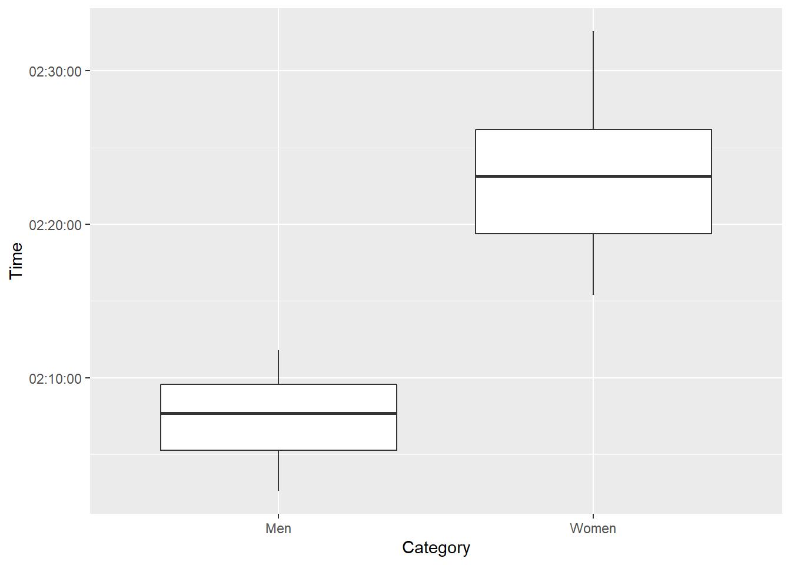
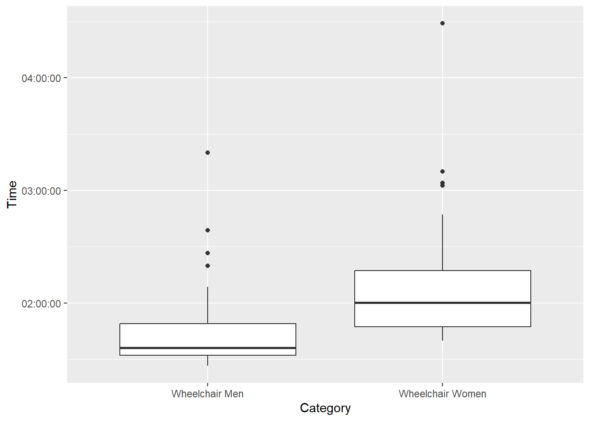
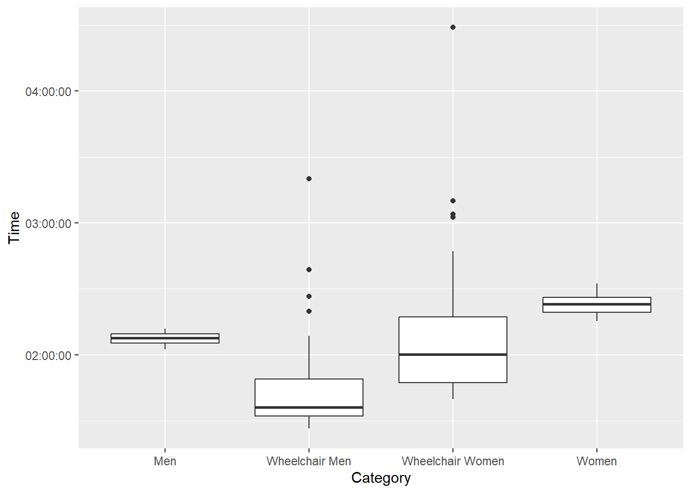
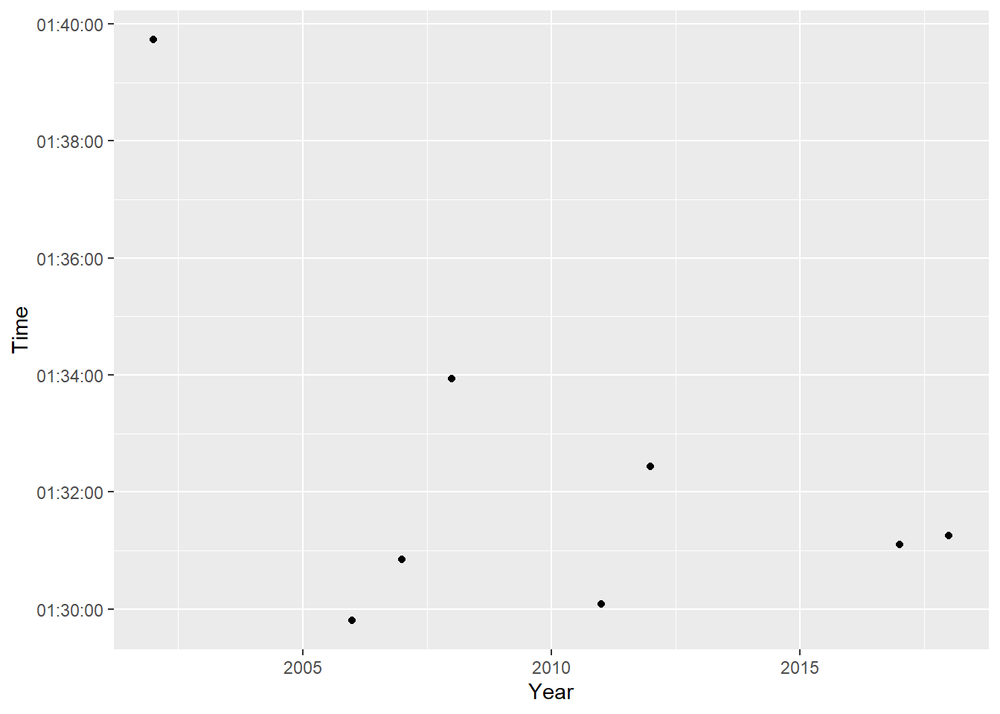
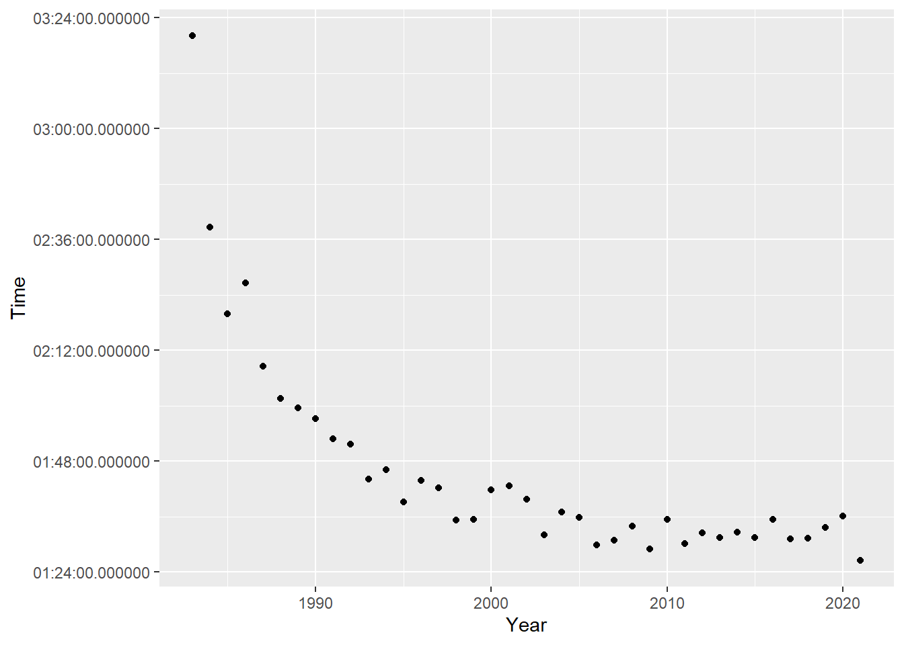
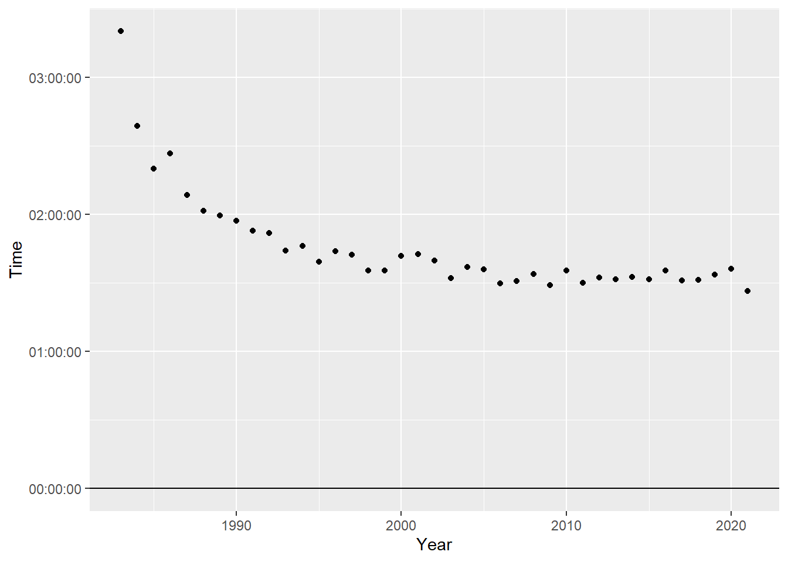
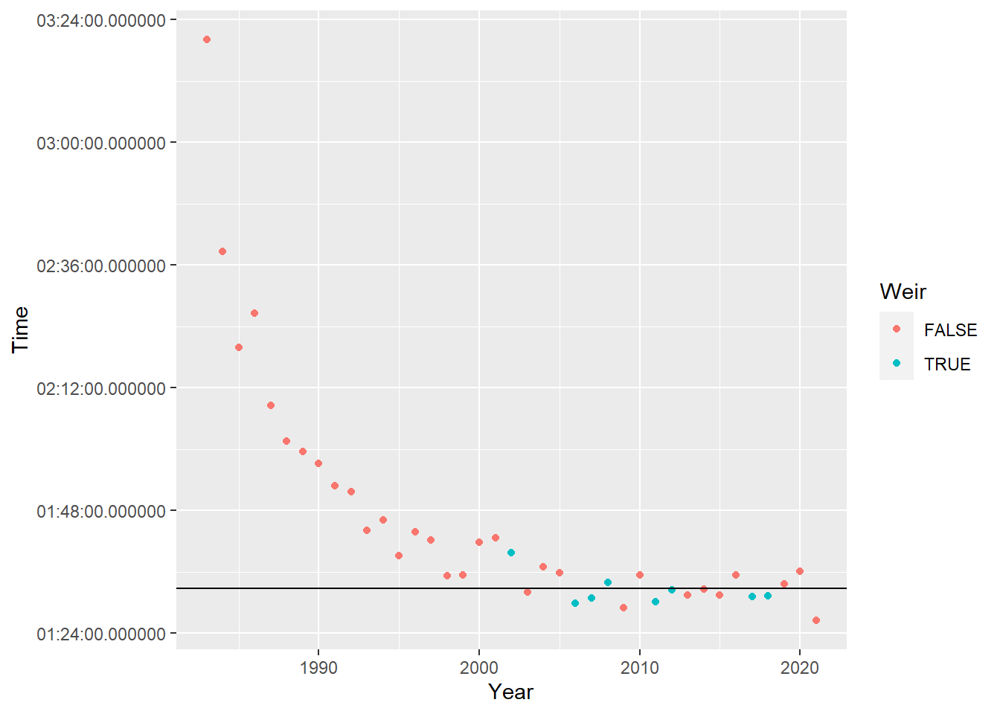
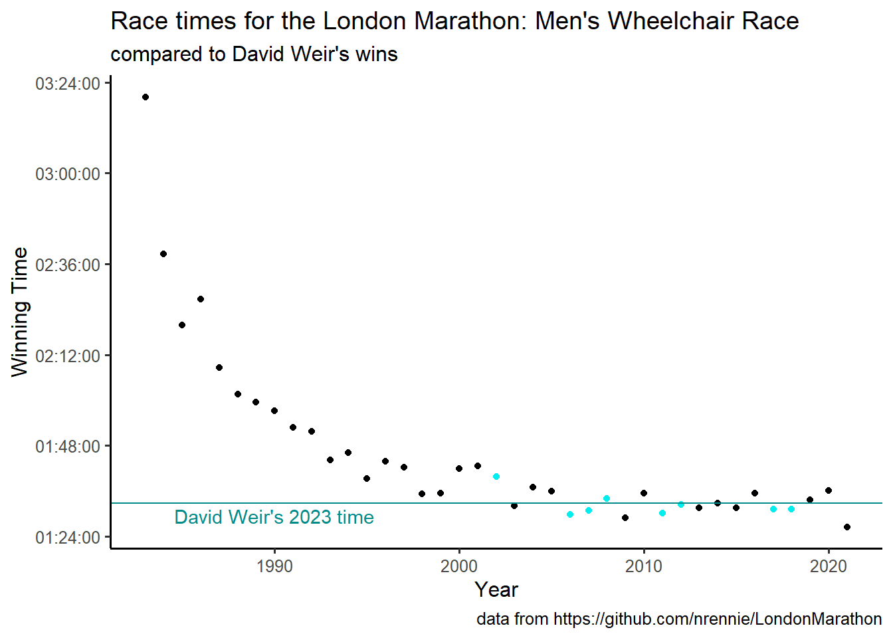

library(skimr)
library(tidyverse)
library(ggthemes)
library(gt)
library(skimr)TidyTuesday Week 17: London Marathon
R
TidyTuesday
R-code
Data-Viz
TidyTuesday: Exploring the London Marathon
Today’s TidyTuesday is based on a dataset about the London Marathon. The data is via a package by Nicola Rennie and there is an accompanying tutorial about how to scrape data from the web.
Load the data with the TidyTuesday package in the usual way.
tuesdata <- tidytuesdayR::tt_load(2023, week = 17)--- Compiling #TidyTuesday Information for 2023-04-25 ------- There are 2 files available ------ Starting Download ---
Downloading file 1 of 2: `winners.csv`
Downloading file 2 of 2: `london_marathon.csv`--- Download complete ---winners <- tuesdata$winners
london_marathon <- tuesdata$london_marathonThere are two dataframes today: a winner’s dataframe and info about the marathon in general. Looking at the winner’s first.
winners %>% skim()| Name | Piped data |
| Number of rows | 163 |
| Number of columns | 5 |
| _______________________ | |
| Column type frequency: | |
| character | 3 |
| difftime | 1 |
| numeric | 1 |
| ________________________ | |
| Group variables | None |
Variable type: character
| skim_variable | n_missing | complete_rate | min | max | empty | n_unique | whitespace |
|---|---|---|---|---|---|---|---|
| Category | 0 | 1 | 3 | 16 | 0 | 4 | 0 |
| Athlete | 0 | 1 | 9 | 26 | 0 | 99 | 0 |
| Nationality | 0 | 1 | 5 | 14 | 0 | 24 | 0 |
Variable type: difftime
| skim_variable | n_missing | complete_rate | min | max | median | n_unique |
|---|---|---|---|---|---|---|
| Time | 0 | 1 | 5187 secs | 16143 secs | 02:07:55 | 158 |
Variable type: numeric
| skim_variable | n_missing | complete_rate | mean | sd | p0 | p25 | p50 | p75 | p100 | hist |
|---|---|---|---|---|---|---|---|---|---|---|
| Year | 0 | 1 | 2001.61 | 11.83 | 1981 | 1991.5 | 2002 | 2012 | 2022 | ▇▇▇▇▇ |
All the data is complete.
Category and Nationality should probably be factors rather than characters.
winners <- winners %>%
mutate(Category = as.factor(Category), Nationality = as.factor(Nationality))
glimpse(winners)Rows: 163
Columns: 5
$ Category <fct> Men, Men, Men, Men, Men, Men, Men, Men, Men, Men, Men, Men…
$ Year <dbl> 1981, 1981, 1982, 1983, 1984, 1985, 1986, 1987, 1988, 1989…
$ Athlete <chr> "Dick Beardsley (Tie)", "Inge Simonsen (Tie)", "Hugh Jones…
$ Nationality <fct> United States, Norway, United Kingdom, United Kingdom, Uni…
$ Time <time> 02:11:48, 02:11:48, 02:09:24, 02:09:43, 02:09:57, 02:08:1…When I check to make sure everything is correct after making the factors, I see that some athletes have (Tie) after their name. If I do something with the runner’s names later (or if I care about ties) then I need to handle this.
There are four categories of races in our dataset- Men, Wheelchair Men, Wheelchair Women, Women.
I’m going to do some simple comparisons first. I’m looking for something interesting to focus on.
winners %>%
filter(Category == "Men" | Category == "Women") %>%
ggplot(aes(Category, Time)) +
geom_boxplot()
winners %>%
filter(Category == "Wheelchair Men" | Category == "Wheelchair Women") %>%
ggplot(aes(Category, Time)) +
geom_boxplot()
Men are faster than women, in both classes of races.
winners %>%
ggplot(aes(Category, Time)) +
geom_boxplot()
Wheelchair races are faster than the running races. The Men/Women’s races are much closer than the Wheelchair races, and don’t have outliers.
I’m interested in ties. How many ties have there been? I’m going to make a column called “Tied” and remove (Tied) from the names. There are a few different ways to do this, but I’m going to use tidyr::separate(). I’m going to take the space too, when I separate out the name and (tie), so my name column is cleanly formatted. This is going to generate a bunch of NAs in the Tied column, but I’ll handle that in the next code chunk. I’m using " (" as my separator, so the Name column will not have the trailing space. The Tied column will have “Tie)” and a bunch of NAs, but I’ll clean this up in the next step. I’ve left warnings on for this code chunk, so you can see that the NAs are flagged for your notice.
Remember that special characters like ( need to be escaped out, so the appropriate regular expression for the separator is " \\(".
As a side note, as of winter 2022, separate has been superseded by a family of functions separate_wider_*.
winners_tied <- winners %>%
separate(Athlete, into = c("Name", "Tied"), " \\(")Warning: Expected 2 pieces. Missing pieces filled with `NA` in 161 rows [3, 4, 5, 6, 7,
8, 9, 10, 11, 12, 13, 14, 15, 16, 17, 18, 19, 20, 21, 22, ...].Now I’m going to clean up the Tied column.
winners_tied <- winners_tied %>%
mutate(Tied = ifelse(is.na(Tied) == TRUE, FALSE, TRUE))So how many ties are there?
winners_tied %>% filter(Tied == TRUE)# A tibble: 2 × 6
Category Year Name Tied Nationality Time
<fct> <dbl> <chr> <lgl> <fct> <time>
1 Men 1981 Dick Beardsley TRUE United States 02:11:48
2 Men 1981 Inge Simonsen TRUE Norway 02:11:48Just those first two, from the very first race. According to wikipedia, they crossed the finish line holding hands!
Anyone win more than once?
winners_tied %>%
group_by(Name) %>%
count(Name, sort = TRUE) %>%
filter(n > 1)# A tibble: 34 × 2
# Groups: Name [34]
Name n
<chr> <int>
1 David Weir 8
2 Tanni Grey-Thompson 6
3 David Holding 4
4 Eliud Kipchoge 4
5 Francesca Porcellato 4
6 Ingrid Kristiansen 4
7 Tatyana McFadden 4
8 António Pinto 3
9 Dionicio Cerón 3
10 Heinz Frei 3
# ℹ 24 more rowsMore than I expected! David Weir has won the most London Marathons, with 8 wins in the Men’s Wheelchair race category. How has his race time changed over the years?
winners_tied %>%
filter(Name == "David Weir") %>%
ggplot(aes(Year, Time)) +
geom_point()
It looks like his first race was much slower than the other times he has won. It turns out he has competed in the London Marathon 23 times, and placed 5th in the 2023 Marathon which happened this weekend. His time on Saturday was 01:32:45. This is interesting, because it is quite similar to his more recent races.
Has the field for this race gotten faster?
winners %>%
filter(Category == "Wheelchair Men") %>%
ggplot(aes(Year, Time)) +
geom_point()
Yes, and quite clearly too! How many years would he have won with this year’s time?
time_2023 <- as.difftime("01:32:45", format = "%H:%M:%S", units = "auto")
slow_wins <- winners %>%
filter(Category == "Wheelchair Men" & Time >= time_2023)
fast_wins <- winners %>%
filter(Category == "Wheelchair Men" & Time < time_2023) So 12 years the wins were faster than his time this year, but 27 years were slower. And just to note, 6 of those 12 faster wins are held by David Weir…
Let’s throw together a visual for this and make it out TidyTuesday viz. Should be simple, right?
winners %>%
filter(Category == "Wheelchair Men") %>%
ggplot(aes(Year, Time)) +
geom_point() +
geom_hline(yintercept = time_2023)
Hmm. ggplot is not playing well with our difftimes.
str(time_2023) 'difftime' num 1.54583333333333
- attr(*, "units")= chr "hours"str(winners$Time[1]) 'hms' num 02:11:48
- attr(*, "units")= chr "secs"Apparently, our race time from winners is actually hms and not difftime. Skim reported it was a difftime. Our difftime has units of hours, while Time has units of seconds. This is probably due to be setting units to “auto” when I did the conversion. Interesting that dplyr filtering handles this smoothly, but ggplot doesn’t.
time_2023 <- as.difftime("01:32:45", format = "%H:%M:%S", units = "sec")
str(time_2023) 'difftime' num 5565
- attr(*, "units")= chr "secs"I’m going to create a TRUE/FALSE column for if David Weir won that I will color code the win by.
winners %>%
filter(Category == "Wheelchair Men") %>%
mutate(Weir = ifelse(Athlete == "David Weir", TRUE, FALSE)) %>%
ggplot(aes(Year, Time, color = Weir)) +
geom_point() +
geom_hline(yintercept = time_2023)
Okay, now lets clean up the formatting. I need to:
Apply a theme. I like
theme_classic()ortheme_pander()as a clean base for my graphs.Remove the legend. This needs to go after the theme_classic/pander() call or the legend will reappear.
Add title, subtitle and data source
Fix the y-axis units
Change the colors for the David Weir points.
Label my horizontal line.
#4 is apparently quite challenging. Apparently, the time axis should be displayed as hms, so it isn’t clear to me why fractional seconds are shown. I tried a bunch of different suggestion from the web, but the top answer to this question is what worked.
It actually doesn’t matter if the aesthetic is difftime or hms. The key is that the label section of scale_y_time needs a formatted string generated from strftime.
winners %>%
filter(Category == "Wheelchair Men") %>%
mutate(Weir = ifelse(Athlete == "David Weir", TRUE, FALSE)) %>%
ggplot(aes(Year, Time, color = Weir)) +
geom_point() +
scale_color_manual(values = c("black", "cyan2")) +
geom_hline(yintercept = (time_2023),
color = "cyan4") +
annotate(
"text",
x = 1990,
y = time_2023 - 200,
label = "David Weir's 2023 time",
color = "cyan4"
) +
scale_y_time(name = "Winning Time", labels = function(l) strftime(l, '%H:%M:%S')) +
labs(title = "Race times for the London Marathon: Men's Wheelchair Race",
subtitle = "compared to David Weir's wins",
caption = "data from https://github.com/nrennie/LondonMarathon") +
theme_classic(12) +
theme(legend.position = "none") 
Citation
BibTeX citation:
@online{e.sinks2023,
author = {Louise E. Sinks},
title = {TidyTuesday {Week} 17: {London} {Marathon}},
date = {2023-04-25},
url = {https://lsinks.github.io/posts/2023-04-25-tidytuesday-marathon/marathon},
langid = {en}
}
For attribution, please cite this work as:
Louise E. Sinks. 2023. “TidyTuesday Week 17: London
Marathon.” April 25, 2023. https://lsinks.github.io/posts/2023-04-25-tidytuesday-marathon/marathon.